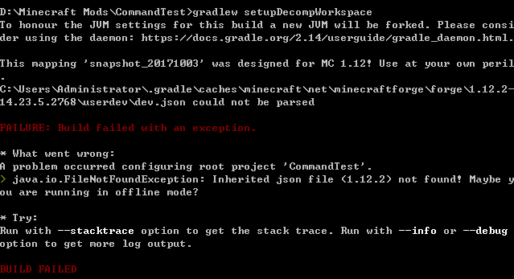

版本信息
你使用的IDE：
你使用的IDE版本:<2019.3.4>
Forge版本: <1.12.2-14.23.5.2768>
Minecraft版本: <1.12.2>
出错图
![ ]
错误情况简述
配置1.12.2时出现了问题，挂了v，试了很多次，还是不可以。我真的不想被劝退，谢谢帮忙！
报错日志
This mapping 'snapshot_20171003' was designed for MC 1.12! Use at your own peril
.
C:\Users\Administrator\.gradle\caches\minecraft\net\minecraftforge\forge\1.12.2-
14.23.5.2768\userdev\dev.json could not be parsed
FAILURE: Build failed with an exception.
* What went wrong:
A problem occurred configuring root project 'CommandTest'.
> java.io.FileNotFoundException: Inherited json file (1.12.2) not found! Maybe y
ou are running in offline mode?
* Try:
Run with --stacktrace option to get the stack trace. Run with --info or --debug
option to get more log output.
BUILD FAILED
Total time: 56.301 secs
D:\Minecraft Mods\CommandTest>